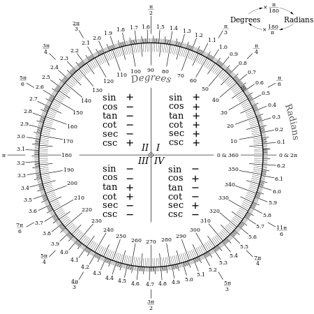

Functii trigonometrice
"Matematica este limba cu care Dumnezeu a scris universul."
-Galileo Galilei-
`sin^2 t + cos^2 t = 1`

`"tg " t = (sin t)/(cos t)`
`"ctg " t = (cos t)/(sin t)`
Surce: Wikipedia si Google Images
BIBLIOGRAFIE: MANUAL DE MATEMATICA CLASA X, EDITURA DIDACTICA SI PEDAGOGICA AUTORI: C.NASTASESCU, C.NINTA,I.CHITESCU, D.MIHALCA, M.DUMITRESCU